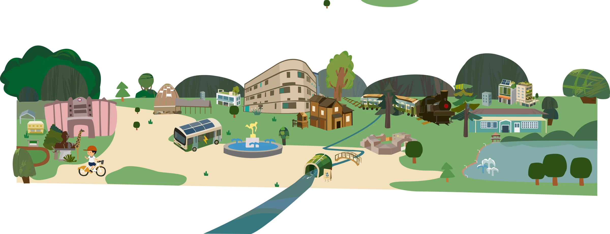

晴天
依你的參考圖安排，隨時可以重新組合。
在網頁完成編輯後，將整座城市放在桌面或地面。AR 中可移動、旋轉與縮放整座城市。
iPhone／iPad 請用 Safari；Android 請用支援 ARCore 的 Chrome。若沒有出現 AR 按鈕，仍可旋轉觀看 3D 城市。手機 AR 需 HTTPS 安全連線，桌面瀏覽器只提供 3D 預覽。

嘉義市西區博愛國小課程博覽會互動網頁
目前城市將被取代，可透過「復原」返回。
確認作品照片，填寫作品名稱，再上傳到課程博覽會作品資料夾。不需要登入 Google。
上傳完成前請保持此視窗開啟。